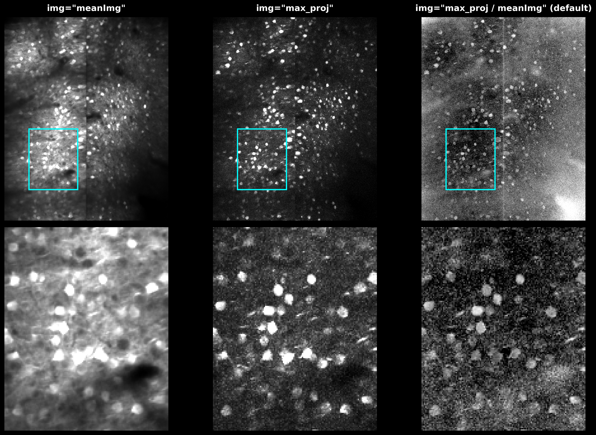
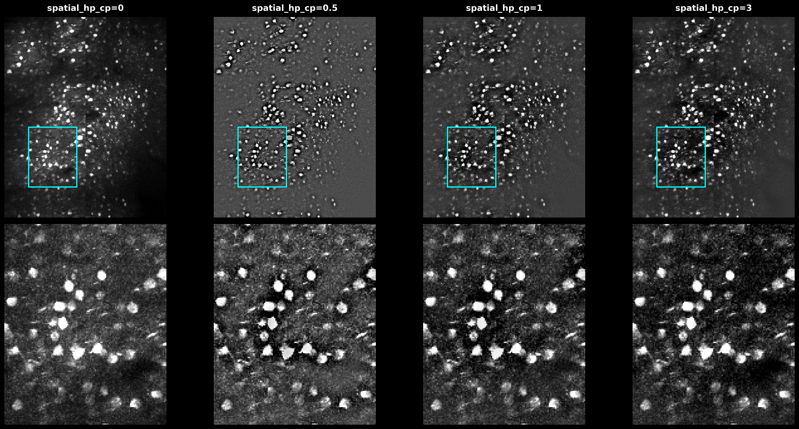

Projection Images#
Suite2p computes several reference images during registration and detection. These images are used for quality assessment and as inputs to Cellpose anatomical segmentation.
Processing Pipeline#
Images stored in ops.npy are computed at different stages:
Step |
Description |
Disable |
|---|---|---|
Temporal Binning |
Average consecutive frames to reduce noise |
|
Temporal High-Pass |
Remove slow baseline drift from movie |
|
* The MBO fork allows disabling high_pass; standard Suite2p always applies it.
What’s stored:
meanImg- mean of binned movie (computed before HP filter)meanImgE- enhanced mean from registration (spatial high-pass ofmeanImg); GUI display only, not a Cellpose inputmax_proj- max of binned + HP filtered movieVcorr- correlation map or cellpose input image
Cellpose Input Images#
Cellpose segments one static image, chosen by cellpose_settings.img. Suite2p 1.1.0 accepts three values:
|
Image |
Description |
|---|---|---|
|
|
default; log ratio emphasizes active regions |
|
|
temporal mean |
|
|
maximum projection of HP-filtered movie |
The enhanced mean image (meanImgE) is no longer a Cellpose input; the old anatomical_only=3 was removed upstream.
Selecting the image (recommended). Enable Cellpose with algorithm="cellpose" and pick img:
ops = {"algorithm": "cellpose", "img": "max_proj / meanImg"} # default
ops = {"algorithm": "cellpose", "img": "meanImg"}
ops = {"algorithm": "cellpose", "img": "max_proj"}
Legacy. The integer anatomical_only still works and maps to img:
ops = {"anatomical_only": 1} # img = "max_proj / meanImg" (default)
ops = {"anatomical_only": 2} # img = "meanImg"
ops = {"anatomical_only": 4} # img = "max_proj"
anatomical_only=0 (or algorithm="sparsery"/"sourcery") uses functional detection. anatomical_only=3 warns and falls back to 1.
{kind=link}

The three Cellpose input images. meanImg: temporal mean. max_proj: maximum projection of the HP-filtered movie. max_proj / meanImg (default): log ratio highlights active regions.#
The image is built exactly as in suite2p/detection/anatomical.py::select_rois:
if img == "max_proj / meanImg":
out = np.log(np.maximum(1e-3, max_proj / np.maximum(1e-3, mean_img)))
elif img == "meanImg":
out = mean_img
elif img == "max_proj":
out = max_proj
Spatial High-Pass Filter#
spatial_hp_cp (upstream cellpose_settings.highpass_spatial; integer, default 0) sharpens the chosen img before Cellpose. It is separate from the temporal high_pass used during detection, and does not modify the stored meanImg or max_proj.
{kind=link}

Effect of spatial_hp_cp values (0, 0.5, 1, 3) on the max projection. Higher values sharpen cell boundaries but may amplify noise.#
When spatial_hp_cp > 0, the image is normalized to [0, 1] and a Gaussian-blurred copy (sigma = diameter × spatial_hp_cp) is subtracted twice:
from scipy.ndimage import gaussian_filter
from cellpose.transforms import normalize99
def apply_hp_filter(img, diameter, spatial_hp_cp):
img = np.clip(normalize99(img), 0, 1)
sigma = diameter * spatial_hp_cp
img = img - gaussian_filter(img, sigma)
img = img - gaussian_filter(img, sigma)
return img
Recommendations#
ops = {
"algorithm": "cellpose", # enable Cellpose
"img": "max_proj / meanImg", # detection image (default)
"spatial_hp_cp": 0, # increase to sharpen the input image
"diameter": 6, # cell size in pixels
"cellprob_threshold": 0.0,
"flow_threshold": 0.4,
}
If detection is poor:
Try
img="max_proj"orimg="meanImg"Increase
spatial_hp_cpto 1-3 to sharpen cell boundariesAdjust
diameterto match cell sizesimg="max_proj / meanImg"(default) suits data with strong baseline fluorescence
See Also#
User Guide - Complete parameter reference
Cellpose Documentation - Cellpose model details